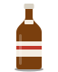
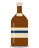
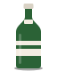
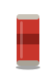
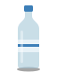
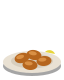
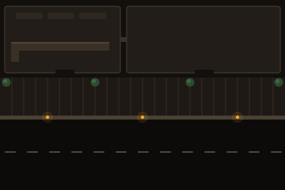

O painel de controle de um bar lotado
Um sistema pequeno de propósito. Fundo de bar à noite, papel creme para o que se toca, âmbar de lâmpada para o que pede atenção. Cor só aparece quando quer dizer alguma coisa.
01 · Cor
Fundo quente, sinais com significado
Seis sinais, cada um com um trabalho só. Eles também diferem em claridade, não só em matiz, para funcionar com daltonismo e sob luz ruim.
#120F0C · #1B1713 · #252019 · #312A21Quatro degraus de superfície. Nada é preto puro.#F3ECE1Texto e botão principal. O que você toca é claro como uma comanda.#93DB8CEstá pronto, foi entregue, foi pago.#F5A524Alguém chamou, está demorando, algo novo chegou. Também é a marca.#FF5D47Passou do tempo ou está travado. Sempre um bloco cheio, nunca só texto.#C3A6FFQuer pagar, perto do limite. Separado de "atrasado" de propósito.#82B8FFAlguém pegou. Azul = já tem dono, não vá junto.#4A2617 · #F2CFA4Relação, não alerta. Cor de madeira de balcão, nunca vermelho.02 · Tempo
A idade é o sinal mais alto da tela
Toda tarefa carrega um relógio à esquerda. A coluna esquenta aos poucos: o olho vai sozinho para o que está esperando há mais tempo.
Chamou atendimento esquenta duas vezes mais rápido (1 e 2 min). Perto do limite não esquenta — dinheiro não é emergência.
03 · Tipo
Estreito para ler de longe, mono para o relógio
Archivo em largura variável: condensada para nomes e lugares, normal para corpo. JetBrains Mono só para tempo, quantidade e código de lugar — os números não pulam quando mudam. Nada abaixo de 14 px.
04 · Espaço e toque
Denso na informação, largo nas ações
Escala
Alvos
56 ação de linha · 68 ação principal · 112 ENTREGUE na rodada. Nunca menos de 44.Superfícies
Linhas separadas por fio, não cartões. Cartão só para o que flutua: sugestão de rodada, folhas e contadores do pico. Cantos 8 em botões, 0 em listas.05 · Peças
Doze peças fazem o produto inteiro
Botões
Papel = faça agora. Escuro = secundário. Cor no botão só quando ela já é o significado da linha. A base mais escura dá sensação de tecla.Relacionamento
Dinheiro e limite
Linha de tarefa em três estados: livre (botão papel), sua (fundo azul, botão muda de verbo) e da equipe (uma linha só, apagada, com o nome de quem pegou). Ninguém precisa perguntar "alguém já levou?".
06 · Estados
Nada trava o atendimento
Sem sinal
Sincronizado
Não foi
Vazio
07 · Ícones e imagens
Desenhado para o bar, não tirado de banco de imagem
Ícones de traço 2,2 px, cantos redondos, sempre ao lado de uma palavra — nunca sozinhos num botão que importa. Ilustrações chapadas nas cores da casa: produtos sem marca registrada, retratos no lugar das fotos até o bar ter as reais.
Produtos · tiles do Pedir, lista da conta, lote do Bar

Brahma 600
Original 600
Heineken 600
Coca lata
Água Fritas
Fritas Calabresa
Calabresa
Bolinho Torresmo
TorresmoPessoas · anel azul = equipe
 Dani · equipe
Dani · equipe Carlos · equipe
Carlos · equipe Aderlan · gerente
Aderlan · gerente João da Oficina
João da OficinaPlanta do bar · escolher lugar e traçar a rodada

Bar principal e Imóvel 2 em cima, calçada no meio, rua embaixo — como o garçom anda. O balcão é a saída de toda rodada.08 · Movimento